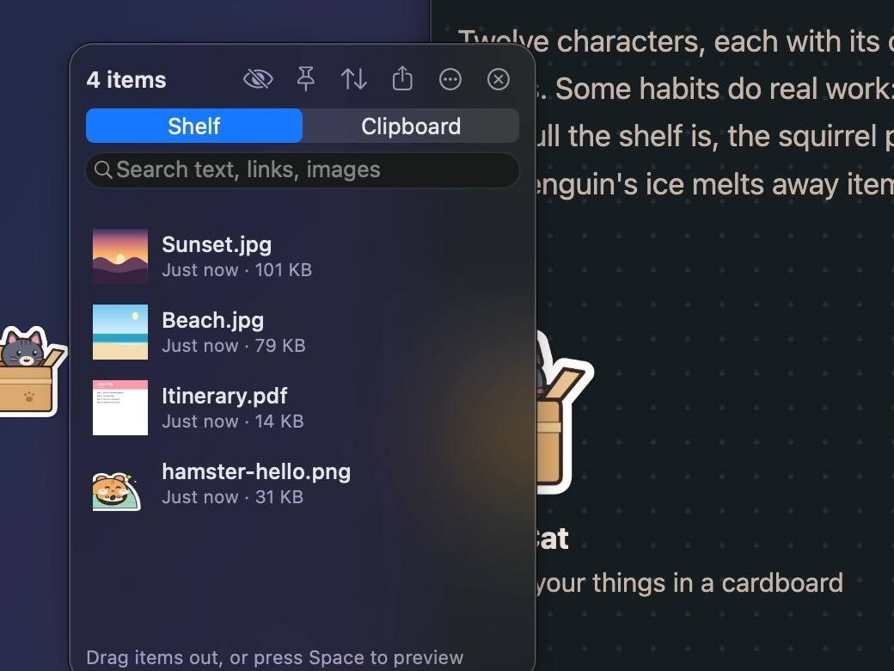

고양이에게 맡기고,
필요할 때 꺼내세요.
PawShelf는 Mac을 위한 선반이에요. 화면 가장자리에서 작은 캐릭터가 빼꼼 얼굴을 내밀고, 앱을 오가는 동안 파일, 폴더, 이미지, 링크, 텍스트를 맡아 둬요.
Mac App Store에서 다운로드macOS 14 이상, Apple 실리콘과 Intel Mac에서 쓸 수 있어요.
이렇게 써요

탭에 놓기
무엇이든 화면 가장자리의 캐릭터 위로 끌어다 놓으세요. 가장자리가 멀다면 드래그하면서 커서를 흔들어 보세요. 커서 바로 옆에 선반이 열려요.

하던 일 계속하기
앱을 바꾸고, Space를 옮기고, 전체 화면으로 전환해도 탭은 가장자리에 그대로 있어요. Mac을 다시 시작해도 항목은 남아 있어요.

끌어서 꺼내기
Finder, 메일, 메신저, 업로드 창에 항목을 놓으세요. 여러 개를 골라 한꺼번에 꺼낼 수도 있어요.
물건을 맡길 친구를 고르세요
캐릭터 12종이 저마다의 방식으로 물건을 보관해요. 어떤 습성은 실제로 일도 해요. 햄스터의 볼을 보면 선반이 얼마나 찼는지 알 수 있고, 다람쥐는 잊힌 항목을 알려 주고, 펭귄의 얼음은 더 필요 없는 항목을 녹여서 치워요.
-


상자 고양이
골판지 상자에 물건을 숨겨 둬요
-


볼주머니 햄스터
선반이 찰수록 볼이 빵빵해져요
-


도토리 다람쥐
잊힌 도토리를 기억했다가 정리를 제안해요
-


얼음 서랍 펭귄
물건을 얼음에 보관하고, 시간이 지나면 녹아 사라져요
-


밤 부엉이
밤에는 또렷, 낮에는 꾸벅꾸벅
-


반짝이 까치
반짝이는 링크와 사진을 모아요
-


물어오는 강아지
필요할 때 물건을 물어다 줘요
-


주머니 캥거루
배 주머니에 물건을 안전하게 넣어 둬요
-


펠리컨
큰 부리를 벌려 떨어뜨린 물건을 받아요
-


여덟 팔 문어
팔마다 하나씩 들고 있어요
-


땅굴 두더지
굴속에 물건을 보관해요
-


등껍질 거북이
등껍질 아래에 물건을 지켜 둬요
스티커에 마우스를 올려 인사해 보세요.
선반이 해야 할 일은 모두 해요
클립보드 기록
최근에 복사한 50개가 선반에 바로 있어요. 암호 관리 앱이 비공개로 표시한 복사는 기록하지 않아요.
새 파일 자동으로 모으기
스크린샷이나 다운로드 같은 폴더를 고르면, 새로 생긴 파일이 알아서 선반에 올라와요.
이미지 속 글자 검색
스크린샷에 적힌 글자로 스크린샷을 찾을 수 있어요. 글자는 Mac 안에서 인식해요.
링크 제목과 아이콘
링크가 주소만이 아니라 페이지 제목과 아이콘으로 보여요.
최근에 뺀 항목
실수로 뺐나요? 선반의 ⋯ 메뉴에서 되살릴 수 있어요.
미리보기와 공유
스페이스 키로 훑어보고, AirDrop이나 메시지로 보낼 수 있어요.
컬렉션
관련된 항목을 컬렉션으로 묶고, 한 번에 한 컬렉션만 골라 볼 수 있어요.
모든 Space에서
탭은 모든 Space에서 보이고 전체 화면 앱 위에도 떠 있어요. 왼쪽이나 오른쪽 가장자리에 둘 수 있어요.
VoiceOver 지원
선반의 모든 버튼과 항목에 VoiceOver 레이블이 있어요.
시스템 설정에서 허용할 것이 없어요
PawShelf는 손쉬운 사용 권한도, 화면 기록 권한도 요청하지 않아요. App Sandbox 안에서 실행되고, 사용자가 건넨 것만 열어요. 선반에 올린 것은 Mac에 그대로 남아요.